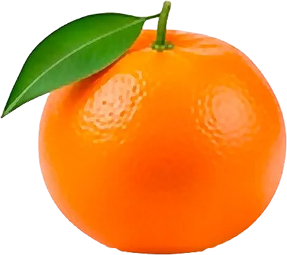

Clémentine

La clémentine de Corse IGP se reconnaît à ses feuilles laissées sur le fruit.
- Saison : novembre, décembre, janvier, février
- Pleine saison : décembre, janvier
- Famille botanique : Rutacées
Histoire
La clémentine doit son nom au frère Clément (Vital Rodier), qui l’a découverte vers 1902 dans le jardin d’un orphelinat près d’Oran, en Algérie. Probable hybride entre un mandarinier et un oranger, elle est plantée en Corse à partir des années 1920.
Origine et régions de production
La clémentine française est cultivée en Corse, principalement sur la plaine orientale :
- Corse (plaine orientale)
La clémentine de Corse bénéficie d’une IGP : elle est cueillie à maturité et vendue avec ses feuilles, gage de fraîcheur.
Bienfaits
La clémentine est le fruit plaisir de l’hiver :
- Vitamine C : Deux clémentines couvrent une bonne partie des besoins quotidiens.
- Énergie modérée : Environ 47 kcal/100 g.
- Fibres : Présentes dans les membranes des quartiers.
- Pratique : Facile à éplucher, idéale pour les goûters.
Variétés
- Clémentine de Corse : IGP, vendue avec ses feuilles.
- Oronules : Précoce, dès octobre.
- Clemenules : Grosse et juteuse, la plus cultivée en Espagne.
- Hernandina : Tardive, jusqu’en février.
Conserver sans gaspiller
- Conservation : Au frais, dans une coupe : 1 à 2 semaines. Au frigo, un peu plus.
- Congélation : En quartiers ou en jus : jusqu’à 6 mois.
- Rien ne se jette : Les écorces, séchées, parfument une tisane ou un gâteau. Confites, elles font des friandises.